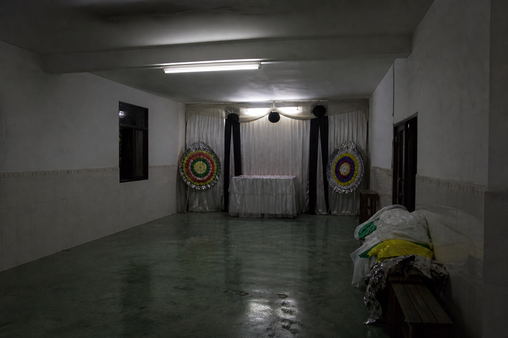

轴下一段

「西房」和「哪一房」叠在同一句里。一个是屋子的方向，一个是谱上的份。我先写成房份了，又改回屋子。盛麦若把铁盒放在西厢，听写就会变成这样。
村栏里有一张不让西厢堆纸扎的通知，写的是过道和火，不是礼单。礼簿钱箱那页若打开，盒的位置会写死。这一截没有人报自己的姓名。标在场的时候别靠这一句凭空添房头。
门轴那声是西厢旧门。纪冷杉下午用铁丝把门扣松过，好让盛麦进进出出。他提过，怕每次喊人。「别问我哪一房出」——说话的人自己也嫌房字缠。缠的时候更要看盒在哪。盒在哪，不在这一截里。